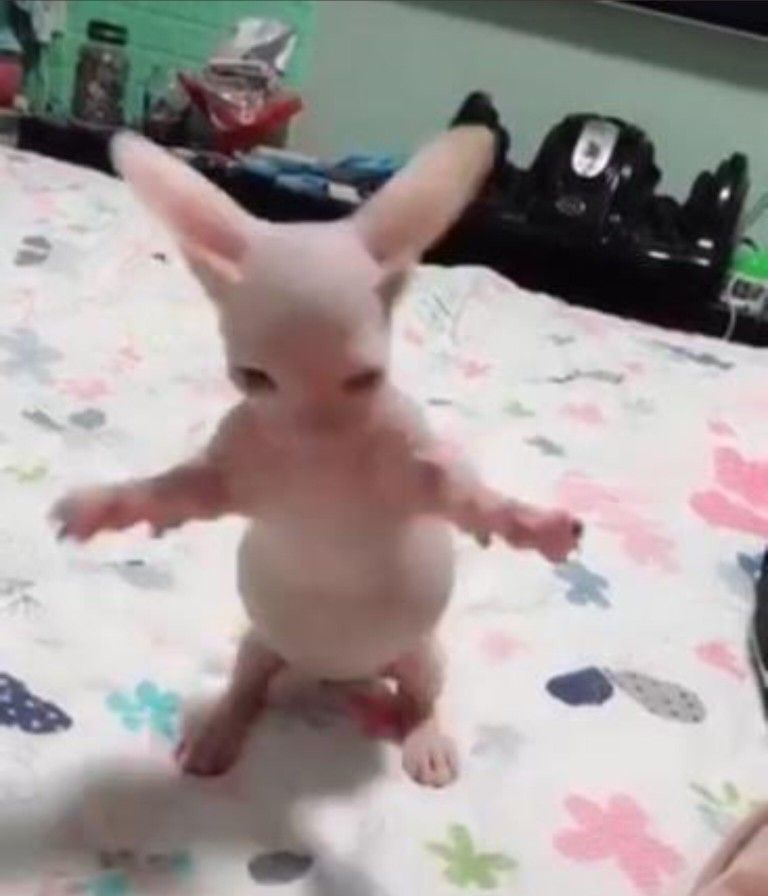

Você já pensou como sua vida ficaria mais legal com um gatito berrando do seu lado de madrugada? adquira já os nossos mini felinos
(Apenas um por CPF)

Gatito pelado dançante
 - Chiens Chats.jpg)
Gatito maluco

Gatito quebrado
Gostaria de ter lontras??? temos outra página de adoção direcionada a lontras tbm!! Confira:
Clique para a próxima página
Página do nosso projeto:
Projeto!